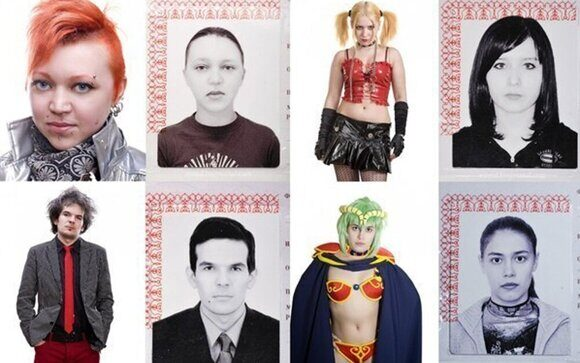

« НазадПодробное руководство по требованиям для фото на паспорт Данная статья – подробное руководство, составленное на основе официальных документов и опыта специалистов, поможет вам сделать фото, соответствующее всем стандартам. В ней рассмотрены технические нормы, рекомендации по подготовке, а также практические советы по выбору одежды, прически и аксессуаров. Если вы хотите, чтобы ваше фото было принято с первого раза, следуйте нашим рекомендациям и узнайте ответы на часто задаваемые вопросы, чтобы избежать дорогостоящих ошибок и повторных съемок. Общие требования к фото для паспорта в 2025 годуОфициальные правила оформления фото для паспорта в 2025 году опираются на актуальные нормативные документы, такие как Приказ МВД России от 16.11.2020 N773 п.36. Эти требования предусматривают детальное соблюдение параметров, технических характеристик и внешнего вида изображения. Основные пункты требований: Размер снимка Формат изображения Фон Расположение лица Выражение лица Глаза Прическа Макияж Одежда Очки Головные уборы Освещение Плотность и тип бумаги Электронное изображение Ретушь Эти требования должны соблюдаться бескомпромиссно, так как любые отклонения могут привести к отказу в приеме паспорта, что приведет к дополнительным временным и финансовым затратам. Подготовка к съёмке фото для паспортаПодготовка к съемке фото для паспорта – это не только проверка технических требований, но и создание комфортной обстановки для фотографируемого. В данном разделе мы обсудим, как подготовиться к фотосессии, чтобы результат превзошел ожидания. Выбор одеждыПравильный выбор гардероба играет ключевую роль:
Подготовка прическиВаша прическа должна подчеркивать индивидуальность, не закрывая при этом важные детали:
Макияж и уход за кожейМакияж для паспортного фото должен быть максимально естественным, акцентируя внимание на ваших чертах:
Подготовка аксессуаровХотя украшения и аксессуары не играют ключевую роль, они должны гармонично сочетаться с общим обликом:
Технические нюансы съёмкиВ современном мире технологии играют не последнюю роль, и соблюдение технических требований к фото для паспорта является важным аспектом. Рассмотрим, на что нужно обратить внимание при съёмке изображения. ОсвещениеКачество освещения напрямую влияет на итоговую фотографию:
Разрешение и качество изображенияДля гарантии принятия фото необходимо высшее качество изображения:
Фон и композиция снимкаПравильный выбор фона и композиция изображения также играют решающую роль:
Советы экспертов и лучшие практикиДля получения качественного фото для паспорта в 2025 году специалисты рекомендуют соблюдать ряд практических рекомендаций и нюансов. Подготовка перед фотографированиемНебольшая подготовка поможет вам чувствовать себя уверенно:
Работа с профессиональным фотографомОбращение к специалисту может значительно повысить качество снимка:
Дополнительные мелочи, которые улучшают фотоНе стоит недооценивать малейшие детали:
Часто задаваемые вопросыВ этом разделе мы собрали ответы на наиболее распространенные вопросы, связанные с оформлением фото для паспорта в 2025 году. Можно ли использовать старое фото, если оно сделано недавно? Фото, сделанное в течение 3–6 месяцев, может быть принято, если ваши черты не изменились. Однако при значительных изменениях внешности, смене прически или цвета волос рекомендуется сделать новое фото. Разрешается ли ретушь фото, если она не меняет внешний вид? Любая ретушь, способная исказить естественный облик, строго запрещена законом. Допускается лишь минимальное исправление небольших недостатков, не влияющее на распознавание лица. Что делать, если на фото присутствуют блики или тени? Необходимо переснять фото, убедившись, что освещение настроено правильно. При наличии бликов попробуйте изменить угол съемки или используйте дополнительные источники света. Допустимо ли использование очков на фото для паспорта? Да, очки можно оставлять, если они не создают бликов и не закрывают глаза. В противном случае рекомендуется сделать несколько снимков с очками и без них для выбора оптимального варианта. Какие требования предъявляются к фону фотографии? Фон должен быть исключительно белым, ровным и без каких-либо узоров, теней или других элементов, способных отвлечь внимание от лица. Какое разрешение должно быть у электронного изображения? Оптимальное разрешение составляет 300–450 dpi. Это гарантирует достаточную детализацию, чтобы изображение не теряло качество при печати. Можно ли фотографироваться в очках, если они имеют затемненные линзы? Фотоснимок с солнечными очками или затемненными линзами не принимается. Используйте прозрачные линзы, чтобы сохранить естественное восприятие цвета глаз. Какие требования предъявляются к изображению с головными уборами? Головные уборы допускаются исключительно по религиозным мотивам. Если вы обязаны носить головной убор, убедитесь, что ваше лицо остается полностью открытым согласно правилам. ЗаключениеМы рассмотрели все этапы подготовки к фотосъемке: от выбора одежды, прически и аксессуаров до технических аспектов, таких как освещение, разрешение и формат изображения. Рекомендации экспертов и ответы на часто задаваемые вопросы позволят вам чувствовать себя уверенно и избежать неприятных сюрпризов при подаче документов. Не забывайте, что соблюдение всех требований не только упрощает процедуру получения паспорта, но и гарантирует, что ваши документы будут приняты с первого раза. Если возникают сомнения или вопросы, всегда можно проконсультироваться с профессионалами в фотостудии, которые помогут скорректировать все моменты и выполнить съемку в соответствии с требованиями закона. В заключение отметим, что качественное паспортное фото – это инвестиция в ваше будущее. Благодаря соблюдению всех рекомендаций вы сэкономите время и нервы, избежите повторных визитов в государственные учреждения и получите паспорт без задержек. Следуйте нашему подробному руководству, и пусть ваше фото станет образцом качества, соответствующим всем установленным нормам и требованиям 2025 года. Срочное оформление паспорта в Москве – выбирайте опыт «Север»Если вам срочно требуется паспорт и нет времени на долгие ожидания, Паспортно-визовый центр «Север» – ваш надежный помощник в оформлении документов в Москве. Мы работаем уже более 25 лет, и наш опыт позволяет нам обеспечить максимально оперативное и качественное оформление паспорта. Почему выбирают нас?
Наш сервис создан для тех, кто ценит своё время и нуждается в быстром решении вопросов. Мы берем на себя все хлопоты: от консультации по документам до их оперативного оформления. Благодаря индивидуальному подходу и вниманию к каждой детали, мы успешно прошли проверку временем, и доверьтесь нам – ваши документы окажутся в надежных руках. С Паспортно-визовым центром «Север» оформление паспорта становится не стрессом, а простым и быстрым процессом. Вам не нужно тратить часы в очередях или разбираться в бюрократических тонкостях – все вопросы мы решаем за вас. Позвоните нам прямо сейчас по номеру +79255854195 и получите консультацию от наших экспертов, которые оперативно помогут оформить паспорт.
|
Комментарии
Комментариев пока нет